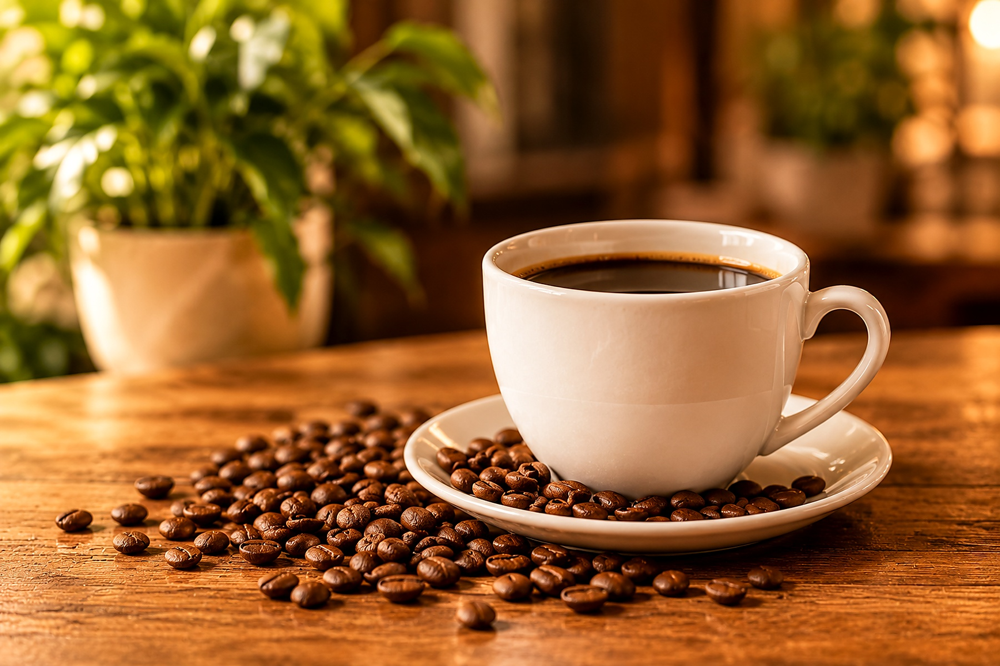

INTRODUCING
Family Friend Coffee
At SIDÓH CAFE, our love of coffee inspires us to connect with other coffee shops and cafés.
We are introducing Family Friend Coffee beans to local businesses interested in discovering new coffee opportunities.
Whether you own a café or manage a coffee shop, we would love to hear from you and discuss your interest.
Contact Us About Coffee BeansLET'S CONNECT
Interested in Offering Family Friend Coffee?
We welcome inquiries from coffee shop owners, managers, and businesses interested in learning more.
Get in Touch